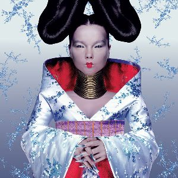
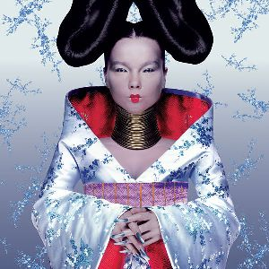
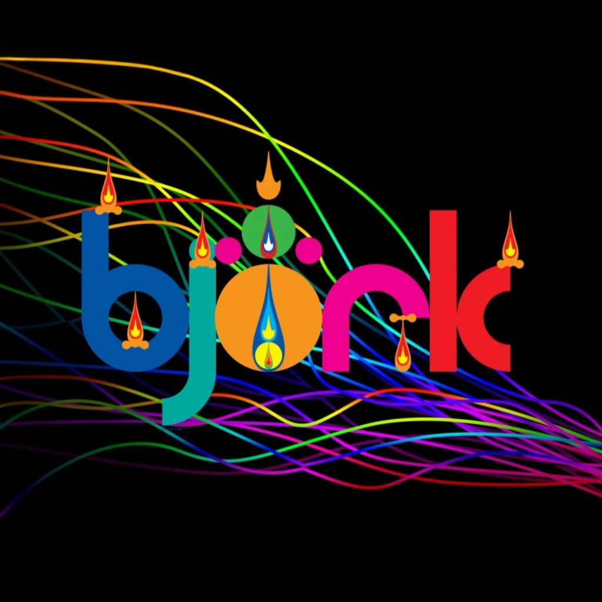
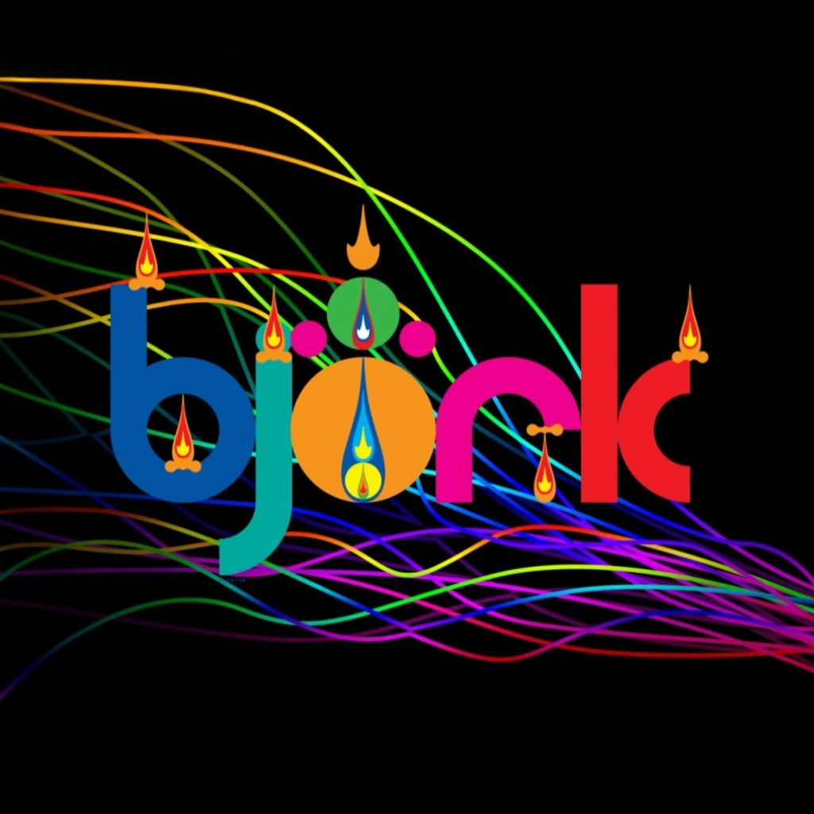
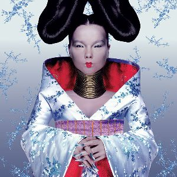
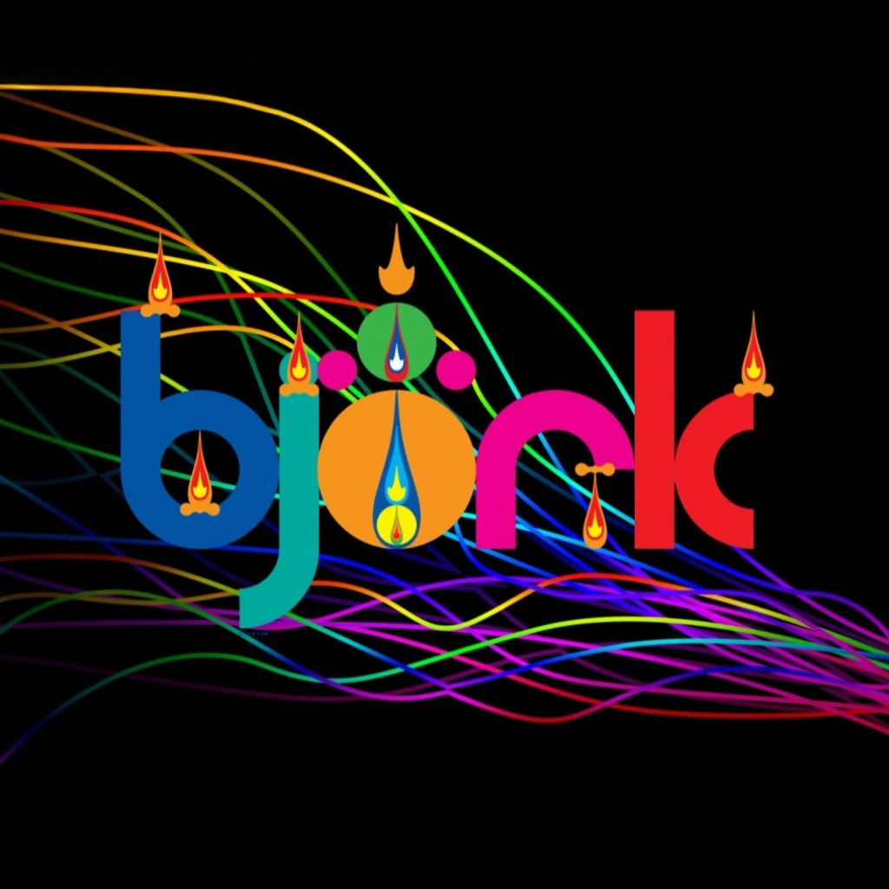
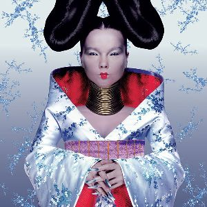
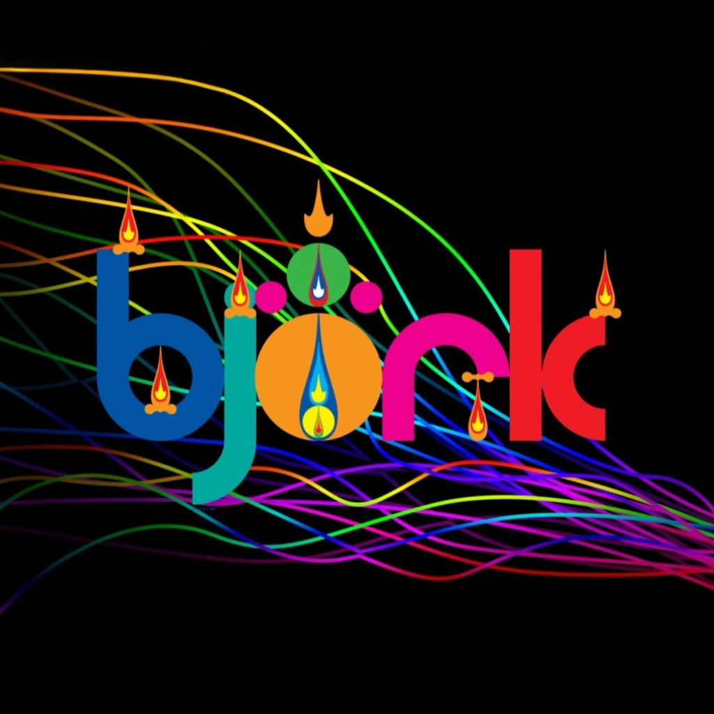

 

 



Björk Guðmundsdóttir, conhecida simplesmente como Björk, é uma renomada cantora e compositora islandesa, laureada com o Polar Music Prize, frequentemente considerado o "Prêmio Nobel da Música". Além de sua carreira musical, Björk é também atriz, instrumentista e produtora musical. Com uma discografia que inclui dez álbuns de estúdio e duas trilhas sonoras, seu estilo musical eclético abrange uma variedade de gêneros, como rock, jazz, música eletrônica, clássica e folclórica. Sua voz é amplamente aclamada por suas características únicas e distintivas.
Na década de 1990, seus singles “It's Oh So Quiet”, “Army of Me” e "Hyperballad” alcançaram o Top 10 das paradas britânicas. Sua gravadora, One Little Indian, reportou que Björk vendeu mais de 120 milhões de álbuns em todo o mundo. Seu trabalho é amplamente reconhecido pela crítica, tendo conquistado cinco prêmios BRIT Awards, dez MTV Video Music Awards, quatro MOJO Awards e três UK Music Video Awards. Em 2010, ela foi agraciada com o Polar Music Prize pela Royal Swedish Academy of Music, em reconhecimento à sua "música profundamente pessoal, letras impactantes, arranjos meticulosos e voz inconfundível".
Além disso, Björk recebeu 18 indicações ao Grammy, 3 ao Oscar e 8 ao Globo de Ouro. Sua atuação no filme "Dançando no Escuro", que ganhou a Palma de Ouro, rendeu-lhe o prêmio de Melhor Atriz no Festival de Cannes de 2000. Ela foi classificada em 36º lugar na lista do VH1 "As 100 Maiores Mulheres do Rock and Roll" e ocupou a oitava posição na MTV "22 Melhores Vozes na Música".
Björk também possui uma forte conexão com a cultura brasileira, expressa em sua música em homenagem à icônica cantora Elis Regina e em colaborações com artistas brasileiros como Milton Nascimento.